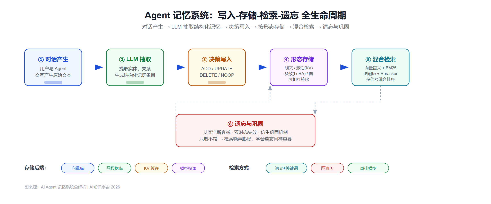

AI Agent 记忆系统全解析：原理拆解、五大开源方案与真实应用场景
引言：没有记忆的 Agent，只是一个更贵的聊天窗口
如果你问一个 AI Agent"上次我们聊到哪了"，大概率会得到一句礼貌的"抱歉，我没有找到相关记录"。
这不是它不够聪明，而是它压根不记得你。行业内一个流传很广的说法是：没有持久化记忆的 AI Agent，在每次交互之间会丢失掉约 80% 的上下文——用户偏好、过去的决策、积累的领域知识，统统清零，每一次对话都是从零开始的"数字失忆症"。
2026 年被很多人称为"Agent 记忆元年"：Mem0 完成新一轮融资、Zep 用时序知识图谱把检索准确率做到 94.7%、UC Berkeley 团队孵化的 Letta（原 MemGPT）过了两万三千颗 GitHub star、国内团队开源的 MemOS 提出"记忆操作系统"概念——这些进展背后是一个共同的判断：记忆正在从"给大模型接个向量库"的外挂功能，演变成 Agent 系统里一层独立的、需要被系统性设计和治理的基础设施。
本文会从原理层拆开 Agent 记忆到底是怎么"写进去、读出来、忘掉"的，横向对比五个主流开源方案的架构差异，结合客服、知识助手、多智能体协同等场景说明记忆机制到底解决了什么问题，最后聊聊行业正在忽视的记忆安全风险。
一、Agent 为什么需要"记忆"：三层拆解
大模型本身是无状态的——每次调用之间不共享任何信息，所谓"记住上文"，靠的只是把历史对话原样塞进 context window。这带来两个硬伤：一是窗口再大也有上限，长期使用必然溢出；二是纯堆砌上下文会让模型在长对话里表现明显下降，反应变慢、抓不住重点。
Agent 记忆系统要解决的，正是这个"上下文窗口撑不住长期状态"的根本矛盾。业内比较通行的拆分方式，是借用认知科学的分层框架：
按时间跨度分：
- 工作记忆（Working Memory）：当前这一轮推理正在处理的信息，随请求结束即释放
- 短期记忆（Short-term Memory）：一次会话内的完整交互历史，通常绑定在同一个 thread/session 里
- 长期记忆（Long-term Memory）：跨会话持久化的知识，包括用户画像、历史决策、领域经验，需要显式的存储和检索机制才能生效
按内容性质分（借用心理学的记忆分类）：
- 情节记忆（Episodic）：具体发生过的事——"用户上周问过一次退货政策"
- 语义记忆（Semantic）：抽象出来的事实和知识——"这位用户是企业客户，偏好正式语气"
- 程序记忆（Procedural）：怎么做事的经验——"处理这类工单时，先核实订单号再转人工"
这两套分类是正交的：一条长期记忆既可能是情节性的（某次具体对话），也可能是语义性的（提炼后的用户偏好）。真正的挑战不在于分类本身，而在于决定什么值得记、什么该被压缩、什么该被遗忘——这恰恰是所有开源记忆方案在架构设计上分歧最大的地方。
二、记忆是怎么"写进去、读出来"的：核心技术原理
抛开具体产品，Agent 记忆系统的技术实现基本都要解决四个问题：怎么写、存成什么形态、怎么检索、什么时候忘。
2.1 写入：从原始对话到结构化记忆
原始对话是非结构化的自然语言，直接存储既浪费空间又不利于精确检索。主流做法是用 LLM 做一次"抽取"，把对话提炼成结构化的记忆条目，再决定如何处理：新增、更新已有记忆、删除过时记忆，或者判断这条信息不值得记（无操作）。这套"抽取 + 决策"的两阶段流程是目前应用最广的写入范式，Mem0 的核心机制就建立在这个思路上。
2.2 存储形态：不只是向量库
早期"Agent 记忆"几乎等同于"塞进向量数据库"，但 2026 年的主流方案已经分化出至少四种存储形态，MemOS 提出的三态框架很适合作为统一视角来理解：
- 明文记忆（Plaintext）：结构化或非结构化的文本条目，比如用户笔记、提示模板、知识图谱节点，编辑成本低，是大多数系统的基础形态
- 激活记忆（Activation）：以 KV-Cache 为核心，把频繁访问的上下文预先编码并缓存在 GPU 显存里，下次调用直接复用而不必重新计算注意力，能大幅降低首 token 延迟
- 参数记忆（Parameter）：通过 LoRA、Adapter 等轻量微调方法，把长期稳定的知识或行为模式"固化"进模型权重，调用效率最高，但修改和删除成本很高——参数里抠掉一条事实，会碰到机器遗忘（Machine Unlearning）尚未成熟的技术深水区
- 图结构记忆（Graph）：用知识图谱的实体—关系—边来组织记忆，擅长表达"谁和谁有什么关系""这个事实什么时候变化过"，是处理时序推理和多跳查询的主流选择
这四种形态不是互斥关系。比如一段高频访问的文本记忆可以被预编码成激活记忆来提速，一个反复出现的稳定行为模式可以被蒸馏成参数记忆固化下来——记忆形态之间的相互转化，正是 MemOS 这类"记忆操作系统"设计的核心卖点。
2.3 检索：语义相似度只是起点
纯向量相似度检索有一个天然弱点：语义相近不等于真正相关，尤其是精确匹配的场景（比如查订单号）反而容易被语义检索模糊掉。因此成熟方案普遍采用混合检索：向量语义检索负责模糊匹配，BM25 一类的关键词检索负责精确命中，图遍历负责挖掘实体之间的关联路径，最后再用重排模型（reranker）综合打分。Zep 的 Graphiti 引擎就把余弦相似度、全文检索和图的广度优先遍历组合在一条检索管道里，官方给出的数据是 155 毫秒左右完成一次检索，同时保持 94% 以上的准确率。
Mem0 的做法则更强调"路由"：同一条查询会被自动分发到向量库、图数据库、键值存储三种不同后端，分别处理语义模糊查询、关系推理查询和精确字段查询，再把结果合并返回，官方托管服务默认用 Qdrant 做向量、Neo4j 做图、Redis 做键值，开源版本则支持替换成 Chroma、Weaviate、Pinecone 或带 pgvector 的 PostgreSQL。
2.4 遗忘与巩固：记忆不该只增不减
一个容易被忽视的原则是：AI 的记忆和人的记忆一样，学会遗忘和学会记忆同样重要。如果记忆条目只增不减，检索噪声会越来越大，存储成本也会线性膨胀。主流的遗忘机制包括：
- 基于艾宾浩斯遗忘曲线的记忆衰减模型：结合时间流逝和重要性权重动态调整记忆强度，实现自适应的强化与淡化
- 时序失效机制：Zep 采用的双时态模型会区分"事实何时在现实中成立"和"系统何时得知这个事实"，当新事实与旧事实的有效期重叠时，旧的边会被标记失效并打上时间戳，既能追踪最新状态，也保留了可审计的历史轨迹
- 学术前沿的仿生方案：2026 年出现了一批直接模拟人脑机制的记忆研究，比如用多巴胺门控机制决定哪些记忆值得巩固，或是让 Agent 在"空闲时段"自主整理、抽象、遗忘、发现模式——这类"离线整理"机制被认为是记忆系统从"存取"迈向"认知"的关键跳板

把这四个环节串起来，就是一套完整的记忆生命周期：对话产生 → LLM 抽取结构化记忆 → 决策写入（增/改/删/不操作）→ 按形态存储（文本/激活/参数/图）→ 查询时混合检索 → 按重要性和时效性动态遗忘或巩固。理解了这条链路，再去看各家开源方案的差异，就会清楚很多——它们本质上都是在这四个环节上做了不同的取舍。
三、五大开源方案深度拆解
3.1 Mem0：最快能落地的"记忆即服务"
Mem0 的定位是一个可插拔的记忆层 API，把向量检索、图数据库和键值缓存三种后端封装在统一接口后面，写入时执行"抽取—决策"两阶段流程，支持 ADD、UPDATE、DELETE、NOOP 四种操作自动维护记忆一致性。官方还提供了融合图数据库的增强版本，用实体节点和关系边表达更复杂的信息结构。
它的优势是开发体验足够简单：可以从一个 Python 库起步，逐步过渡到自托管服务器，再到云端平台，三条路径平滑衔接。2026 年新一代记忆算法在 LoCoMo 基准上跑到 91.6 分，在更贴近真实场景的 LongMemEval 基准上达到 94.8 分，是目前被引用最多的商用化记忆层之一。适合的场景是：需要快速给已有 Agent 补上跨会话记忆能力，且不想自建一整套记忆基础设施的团队。
3.2 Letta（原 MemGPT）：把 LLM 当操作系统来管
Letta 的思路完全不同，它的原始论文标题就是"将 LLM 当作操作系统"——把大模型的 context window 类比成内存（RAM），把外部存储类比成硬盘，Agent 需要像操作系统管理虚拟内存分页一样，在有限的上下文和无限的长期存储之间来回搬运信息。
具体实现上，Letta 把记忆分成核心记忆（core memory，始终在上下文里可见，容量有限但读写延迟为零）和归档记忆（archival memory，向量化存储的大容量记忆库，需要时才检索调入）。关键的设计差异在于：记忆的读写不是外部系统被动注入的，而是 Agent 通过工具调用主动完成的——大模型在推理过程中自己决定"这条信息该存进核心记忆还是该去归档记忆里翻找"。这种"Agent 自编辑记忆"的范式,让 Letta 更适合需要长期在线运行、状态高度个性化的场景，比如需要记住"某只叫 Timber 的宠物是什么品种"这类跨越很多轮对话才会被再次提及的细节。截至 2026 年年中，Letta 主仓库 GitHub star 数突破 2.3 万，自托管版本依赖 PostgreSQL 加 pgvector。
3.3 Zep / Graphiti：时序知识图谱的性能派
Graphiti 是 Zep 开源的时序知识图谱引擎，核心是把对话和结构化业务数据统一表示成一张随时间演化的图。它把记忆分成三层子图：情节子图保留原始输入的完整记录，语义实体子图从情节中抽取实体和关系，社区子图则把强连接的实体聚类成摘要。每一条事实边都带着双时态标记——既记录这件事在现实世界里何时成立，也记录系统何时得知这件事，这让 Graphiti 能同时支持"当前状态查询"和"历史演变追溯"。
性能数据是 Zep 最常拿出来说的卖点：在 MemGPT 团队最早提出的 Deep Memory Retrieval（DMR）基准上，Zep 跑到 94.8 分，超过 MemGPT 的 93.4 分；在 LoCoMo 基准上检索准确率达到 94.7%，检索延迟约 155 毫秒；相比全上下文注入的基线方案，响应延迟降低了约 90%。适合的场景是企业级应用中需要精确追踪"事实如何随时间变化"的业务，比如客户的订阅状态变更、合同条款修订、风险评级调整。需要注意的是，图方案的检索速度通常比纯向量方案慢，Token 消耗也更高，这是用图结构换取时序精度必须付出的代价。
3.4 LangGraph + LangMem：和 LangChain 生态原生打通
如果你的技术栈已经建立在 LangGraph 之上，LangMem 是原生集成成本最低的选择。LangGraph 把记忆明确切成两块：短期记忆是线程级的，绑定在单次会话的 checkpointer 上，随对话自然持久化；长期记忆则依赖独立的 Store 组件，可以跨线程、跨会话共享，并且支持按命名空间隔离——最常见的做法是把 user_id 作为命名空间前缀，避免不同用户的记忆互相串扰。
LangMem 在这套架构上补充了两类核心能力：记忆管理器（Memory Manager）负责从对话中抽取新记忆、更新或清除过时记忆，并对已有记忆做整合归纳；提示优化器（Prompt Optimizer）则根据交互反馈动态调整 Agent 的系统提示和核心行为规则。这套设计的核心 API 不依赖任何特定数据库，理论上可以套用在任何存储后端上，但和 LangGraph 的长期记忆 Store 结合使用时体验最完整。适合的场景是已经用 LangGraph 做多步编排的团队，不想额外引入一套独立的记忆服务。
3.5 MemOS：国产团队提出的"记忆操作系统"
MemOS 是这份名单里唯一由中国团队主导、面向国内开发者社区的开源项目，核心主张是：记忆不该是挂在推理流程外面的辅助缓存，而应该被当作和 CPU、内存同等重要的核心资产，需要像操作系统管理计算资源一样被系统性调度。
它把记忆统一抽象成前面提到的三种形态——明文、激活（KV-Cache）、参数（LoRA/Adapter），并用一个叫 MemCube 的容器统一封装，每个 MemCube 携带元数据头（时间戳、来源、访问权限、优先级）和实际的记忆载荷（文本、张量或权重增量）。三种形态之间可以相互转化：高频访问的文本记忆可以预先转化成激活记忆来降低解码延迟，官方给出的实测数据是在长上下文、短查询的条件下，Qwen2.5-72B 的首 token 延迟降低了 91.4%；长期稳定的知识或行为模式也可以通过蒸馏固化成参数记忆，成为模型的"本能能力"；而当某个参数化的知识过时后，还能通过反向操作把它导出为纯文本，方便显式修正。系统层面由 MemScheduler 负责按任务语义和记忆热度动态调度，支持跨 Agent、跨会话的记忆迁移和共享，并对每个 MemCube 做版本管理和演化追踪。
MemOS 提供 Python 包形式的统一记忆层，原生支持 Neo4j 等图数据库做结构化记忆后端，兼容 HuggingFace、Ollama 及自定义 LLM。对于本身就在做私有化模型部署、关心推理延迟和显存利用率的团队来说，MemOS 这种把记忆和推理引擎深度耦合的思路，比单纯外挂一个记忆 API 更贴近底层优化的诉求。
3.6 一个值得关注的学术前沿：A-MEM
除了这五个工程化程度较高的方案，NeurIPS 2025 收录的 A-MEM 值得一提。它借鉴德国社会学家卢曼发明的 Zettelkasten 卡片盒笔记法，让 Agent 动态生成结构化的"记忆笔记"（包含上下文描述、关键词、标签），再由 LLM 判断新笔记和历史笔记之间是否存在有意义的关联并自动建立链接——新记忆的加入还会触发对相关历史记忆的属性更新，让整个记忆网络持续自我精炼。官方数据显示在多跳推理任务上比 MemGPT 等基线最高提升 6 倍，Token 消耗降低 85%-93%。这代表了记忆组织从"预定义 schema"走向"Agent 自主动态组织"的一个前沿方向，虽然工程成熟度还不及前面五个方案，但代表的设计思路值得关注。
3.7 五大方案速查表
| 方案 | 核心机制 | 存储后端 | 代表性能数据 | 最适合的场景 |
|---|---|---|---|---|
| Mem0 | 抽取+决策（ADD/UPDATE/DELETE/NOOP） | 向量+图+KV 可插拔 | LongMemEval 94.8 分 | 快速给已有 Agent 补记忆能力 |
| Letta（MemGPT） | OS 式分页，Agent 自编辑记忆 | PostgreSQL + pgvector | DMR 93.4 分 | 长期在线、高度个性化的有状态 Agent |
| Zep / Graphiti | 双时态知识图谱，混合检索 | Neo4j 图数据库 | DMR 94.8 分，LoCoMo 94.7% | 需要精确追踪事实随时间变化的企业场景 |
| LangGraph + LangMem | 线程级短期 + 命名空间隔离的长期 Store | 任意 Store 后端 | 无独立基准，依赖底层存储 | 已用 LangGraph 编排的团队 |
| MemOS | 明文/激活/参数三态互转，MemCube 统一封装 | Neo4j + 自定义后端 | TTFT 降低 91.4%（Qwen2.5-72B） | 私有化部署、关注推理延迟的团队 |
需要提醒的是，各家公布的基准分数大多来自厂商自评，评测集、判分模型、评测 prompt 都不完全一致，横向比较时数值本身的参考价值有限，更值得关注的是不同方案在架构取舍上的差异——这才是决定它是否适合你业务场景的关键。
四、怎么选：一个简单的决策框架
面对五个风格迥异的方案，与其纠结哪个"最强"，不如先回答三个问题：
- 需要的是"补一层记忆 API"还是"重构 Agent 运行时"？ 如果只想在现有系统上快速加一个跨会话记忆功能，Mem0 或 LangMem 这类"外挂式"记忆层改造成本最低；如果本来就在设计一个需要长期在线、深度个性化的有状态 Agent，Letta 这种把记忆和运行时深度耦合的方案会更彻底
- 业务里"事实会不会随时间变化"是不是核心诉求？ 如果需要精确回答"用户的会员等级上个月和这个月是否发生了变化"这类时序问题，图结构记忆（Zep/Graphiti）几乎是唯一选择；如果只是需要记住偏好和历史交互，向量+键值的组合已经够用，没必要为图结构的额外开销买单
- 是否已经在做私有化模型部署，对推理延迟和显存有精细化诉求？ 如果答案是肯定的，MemOS 这种把记忆和 KV-Cache、LoRA 深度结合的思路，能带来向量库外挂方案难以达到的性能收益，但相应的运维复杂度也更高
多数生产系统的实际做法是组合而非单选——比如用 Mem0 或 LangMem 做用户偏好和对话历史的常规记忆，同时用图数据库单独处理需要时序推理的业务事实，这也是 Mem0 自身提供图增强变体的原因。
五、落地场景：记忆机制在真实业务里怎么用
5.1 智能客服：从"每次都要重新自我介绍"到真正被记住
传统文本机器人最被诟病的一点，是用户每次接入都得重新说明自己的问题，稍微复杂一点的场景就会被转人工。有跨国企业的客服案例显示，改造前文本机器人的问题解决率不到 20%，超过八成的对话最终仍要靠人工完成。引入带记忆能力的大模型 Agent 之后，系统能持久化用户的历史工单、偏好语气、常见问题类型，问题解决率和客户满意度都有明显改善。
角色一致性也是记忆机制在客服和陪伴类产品里的典型应用。Character.AI 的"角色记忆卡"功能允许用户为自定义 AI 角色设置性格标签，这些标签会被存入用户级记忆，每次对话自动加载，确保角色行为在长期使用中保持一致，而不会因为对话轮次增多而"人设跑偏"。
5.2 企业知识助手：记忆让 RAG 从"查文档"变成"懂业务"
单纯的 RAG 只能检索静态文档，而记忆机制能让 Agent 积累业务过程中动态产生的知识。以金融咨询场景为例，当用户多次咨询过"基金定投策略""风险评估等级"之后，系统可以通过实体识别提取关键要素，构建关联图谱；用户下次问"我的定投组合风险如何"时，Agent 能直接调取图谱中的历史咨询记录，给出个性化分析，而不是每次都从零开始检索文档。这种"场景级记忆"本质上是把 RAG 的静态知识库和 Agent 的动态交互历史打通，形成一个会随业务增长的知识资产。
5.3 多智能体协同：共享记忆是协作的前提
随着多 Agent 框架逐渐成熟，一套系统内同时运行多个共享记忆、协同工作的 Agent 已经不是概念验证，而是生产实践。典型模式是让客服 Agent、营销 Agent、策略 Agent 各自负责不同环节但共享同一份用户记忆——比如在线教育场景里，课前准备、课中陪练、课后复盘可以分别由不同 Agent 负责，共享记忆让整个教学闭环保持信息一致；出行场景里，调度、支付、客服 Agent 集成在一起处理同一笔订单的完整生命周期。这种模式对记忆系统的要求也更高：多个 Agent 并发读写同一份记忆，天然需要更严格的一致性和权限控制，这也是后文安全部分要重点讨论的问题之一。
5.4 具身智能：记忆决定物理世界里的行为一致性
对于需要在物理世界里执行动作的具身智能体，记忆的作用已经超出了"对话连贯"的范畴，直接关系到行为安全。一个机器人如果记不住"这个房间的地面在上次清洁后还没干"，可能会做出不恰当的动作规划。反过来，如果记忆机制存在漏洞，被污染的记忆条目也可能诱导机器人重复执行不安全的物理行为——这也是学术界近期开始关注具身智能体记忆安全的原因，相关内容会在下一节展开。
六、绕不开的坑：记忆越强，攻击面越大
记忆能力越强，能积累的信息越多，一旦被攻击者利用，造成的影响也越持久——这是 2026 年安全研究最密集敲响的一个警钟。OWASP 已经把"记忆投毒"正式列入 Agentic 应用十大风险清单（编号 ASI06），行业调研显示 63% 的企业目前还无法对 Agent 的行为范围做出有效限制，60% 的企业连快速终止一个失控 Agent 的能力都不具备。
具体的攻击路径主要有三类：
- 记忆投毒（Memory Poisoning）：攻击者向 Agent 的记忆库中注入恶意指令或虚假记忆，这些内容会在后续对话中被正常检索出来，形成持续生效的攻击。研究显示这类攻击一旦成功，会在时间维度上不断复现，而不像传统的提示词注入那样，对话一结束攻击就随之失效
- 跨用户污染（Cross-User Contamination）：即使没有恶意攻击者，共享状态的多 Agent 系统也可能因为架构缺陷，意外把一个用户的记忆内容泄露给另一个用户，这在缺乏严格命名空间隔离的系统里尤其容易发生
- 隐蔽篡改（XAMT）：通过双层优化手段，在多 Agent 架构中实施不易被察觉的记忆修改，隐蔽性更强，也更难被常规审计发现
对应的防御思路目前比较成熟的包括：为每个用户的记忆做严格的存储级命名空间隔离而不只是检索时过滤；对读写操作实施基于角色的访问控制；用密码学完整性校验检测记忆条目是否被篡改；以及采用多信号融合的信任评分机制——结合时间衰减、模式匹配和内容分析给每条记忆打分，避免依赖单一检测器（研究显示单一检测器可能漏检六成以上的投毒记忆）。已经有厂商推出了针对性的运行时防护工具，对每一次记忆读写做提示注入筛查、敏感信息泄露检测和完整性基线比对，并支持在发现投毒事件后回滚到已知的安全记忆状态。
对于正在把 Agent 记忆系统投入生产的团队而言，这部分工作不该是上线后的补救措施，而应该在架构设计阶段就纳入考量——尤其是涉及多用户共享记忆、跨会话持久化敏感信息的场景。
七、下一步：从"记忆"到"认知"
实时存取——把记忆写进去、检索出来——已经是被前两代记忆系统解决得比较充分的问题。真正的分水岭在于离线整理：Agent 能不能在空闲时段自主地整合、抽象、遗忘、发现规律，就像人在睡眠中巩固白天的记忆一样。已经有项目在探索这条"做梦机制"的路径，理论依据部分来自前面提到的仿生记忆研究。当一个 Agent 能从上百次调试经历里自主总结出"这类 bug 通常是异步竞态导致的"，而不是每次都从零推理，那才真正跨过了从"记忆"到"认知"的门槛。
另一个可以确定的判断是：记忆安全会成为 Agent 大规模落地绕不开的门槛。记忆投毒、跨用户污染这些攻击向量在 2026 年已经被多篇论文证实存在，而不是纸面上的理论威胁。没有一套完善的记忆安全框架，企业很难放心让 Agent 长期运行并积累敏感信息——这个问题的紧迫程度，目前可能被整个行业低估了。
小结
Agent 记忆系统的技术演进路径其实很清晰：从最初简单的"塞进向量库"，到现在按内容分层（工作/短期/长期）、按形态分类（文本/激活/参数/图）、按机制细分（写入决策、混合检索、时序遗忘）的系统化设计。Mem0、Letta、Zep、LangMem、MemOS 这五个开源方案代表了五种不同的架构取舍，没有绝对的"最优解"，只有和具体业务场景匹配度最高的选择。而记忆安全作为一个新兴但重要性快速上升的议题，值得在系统设计的早期阶段就纳入考量，而不是等出了问题再补救。
免责声明
本文内容基于公开资料整理分析，仅供技术参考，不构成任何投资建议或技术选型的唯一依据。文中涉及的性能数据、评测分数均来自各厂商官方发布或公开技术文档，不同评测集、评测方法之间可能存在口径差异，实际选型请结合自身业务场景做充分测试验证。文中提及的产品、公司、项目名称均为其各自所有者的商标或版权。
参考来源
- Zep Documentation — Graphiti Overview
- Zep: A Temporal Knowledge Graph Architecture for Agent Memory (arXiv)
- A-MEM: Agentic Memory for LLM Agents (arXiv)
- State of AI Agent Memory 2026 (Mem0 Blog)
- AI Memory Security: Best Practices and Implementation (Mem0 Blog)
- Letta (MemGPT) 项目介绍 (AI Wiki)
- LangGraph Memory Overview (LangChain Docs)
- LangMem Conceptual Guide
- MemOS 官方文档
- AI Agent Memory Poisoning: The Attack Surface No One Is Watching
- AI Agent 记忆系统：短期记忆、长期记忆与记忆演化机制 (JavaGuide)
- AI Agent 的记忆机制：智能对话的秘密武器 (BetterYeah AI)
- Mem0 Guide 2026: Add Persistent Memory to Your AI Agents
- 2026年版 AI Agent 记忆技术演进全解析
相关阅读
- 2026 开源向量库全景对比：Milvus、Qdrant、Weaviate、pgvector 到底怎么选
- 智能客服 Agent 全景：架构、落地与选型指南
- MCP vs A2A：重塑 AI Agent 生态的两大协议深度解析
- Agent 治理与可观测性：被忽视的隐藏成本
- 企业级 AI Agent 部署实战指南
推荐搭配装备
善其事，利其器。以下硬件能最大化你的效率体验👇
🔗 通过以上链接购买可支持本站持续运营 🙏